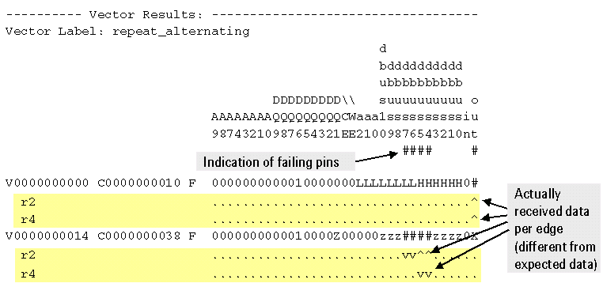

Short data representation with fine result granularity
To get pass/fail results per receive edge in a tester cycle, activate the FRG flag (see Setting the FRG flag). With both FRG enable (fine result granularity) and H/L/I/U (multiple execution) (Multishot Per-Edge Detailed result mode) set, the results of the x2 mode example discussed in Fine result granularity are represented as follows:

If a pin with x-mode timing fails, the cycle is noted in the data log with "#" signs indicating the failing pins. The individual receive edges of the failing cycle are listed below the line with the vector and cycle numbers.
- The Multishot Per-Edge Detailed short result mode, activated by the H/L/I/U (multiple execution) flag, displays edge-specific results (v = low received, ^ = high received).
- In Single-Shot Per-Edge P/F result mode, the short output displays only pass/fail results (. = passed, # = failed).
Functional changes
- Introduced before SmarTest 6.3.2